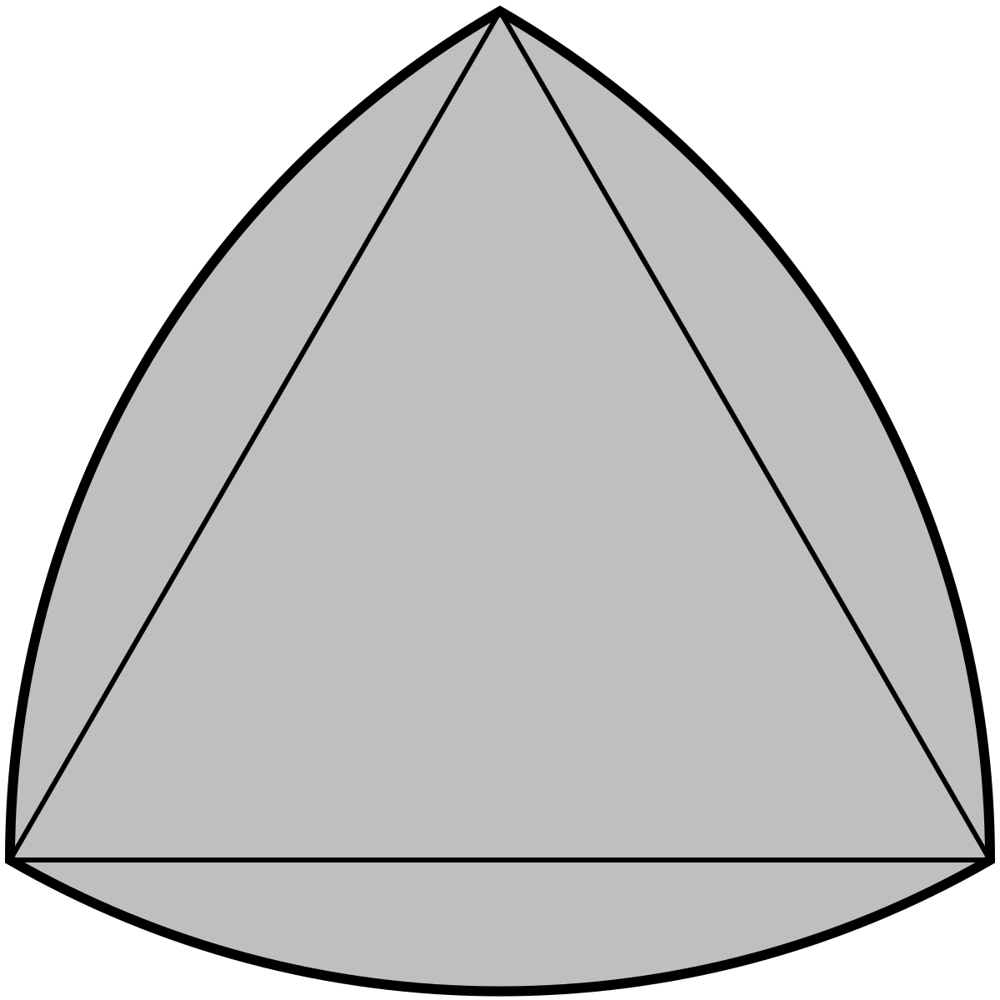
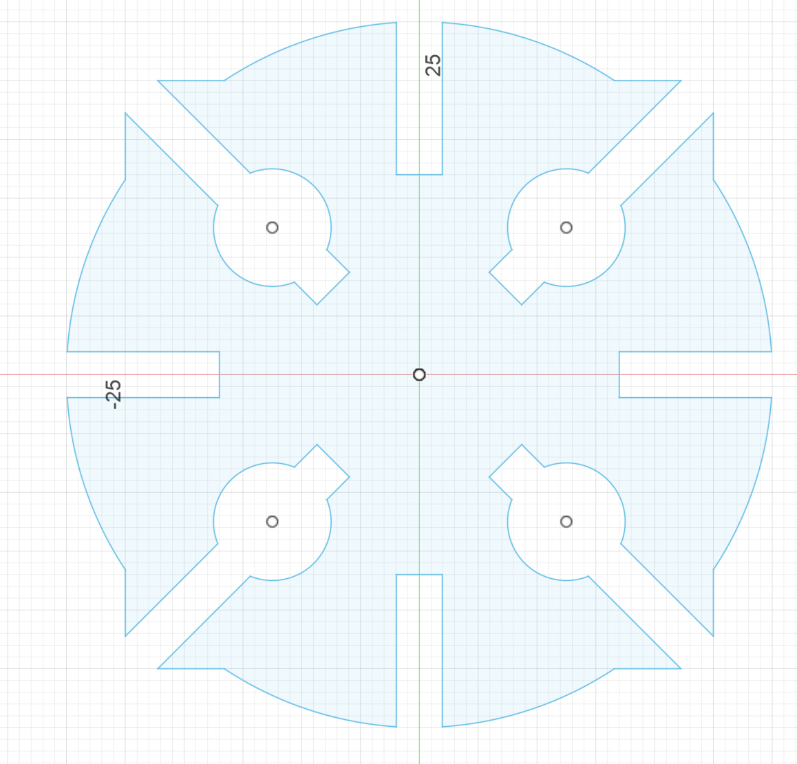

Press Fit Construction
I first started the press fit construction by trying to draw any shape I could think of. During my deliberations, I found a shape I settled on that was able to roll despite not being fully circular. I found inspiration from Reuleaux triangle which can roll despite it not being fully circular. While I didn't end up iterating on the shape as a whole, I did something simular and used a rectangle instead of a triangle in order to create my specific shape.
The shape as a result was the following image:
When finalalizing details after making my sketch parametric, I had to figure out what the kerf was for my shape. After I made a few copies, failing a few times to a faulty kerf, I found out it was about 0.3mm, or 0.15mm on each side. As a result I made the width of my holes around 3.9mm in order to account for the size of the cardboard I was working with as well. This let me snuggly tight the shape together and I finally got the following image as a result.